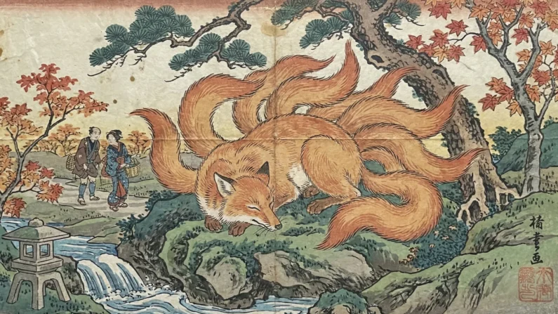

El Kitsune es una criatura legendaria de la mitología con apariencia de zorro sobrenatural.
En la cultura japonesa, los zorros son considerados animales inteligentes,
astutos y dotados de poderes mágicos.
Una de las habilidades más famosas del Kitsune es su capacidad para
transformarse en ser humano. Muchas leyendas cuentan que adopta forma
de mujer, anciano o viajero para interactuar con las personas.
A medida que envejece y gana sabiduría, el Kitsune desarrolla más colas.
Se dice que puede llegar a tener hasta nueve colas. Cuantas más colas
posea, mayor es su poder, inteligencia y experiencia.
Algunos Kitsune son traviesos y disfrutan engañando a los humanos,
mientras que otros actúan como guardianes o mensajeros divinos del dios
, asociado al arroz, la fertilidad y la prosperidad.
Esta dualidad hace del Kitsune una criatura compleja: puede ser tanto
protectora como peligrosa dependiendo de la historia.